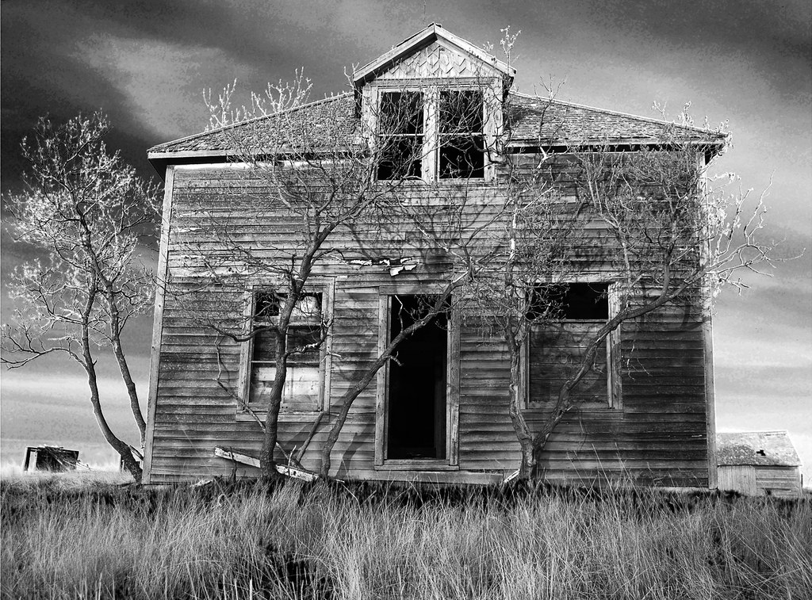

You make your way down the left path and find yourself outside an abondoned house. You make your way to the front door to find out it is locked. You walk around looking another way in. You find a broken window with jagged glass sticking out of the frame. You try to look inside the window but it is a bit too high to see in. You take a look behind you at the dark path you took originally.

What do you decide to do?